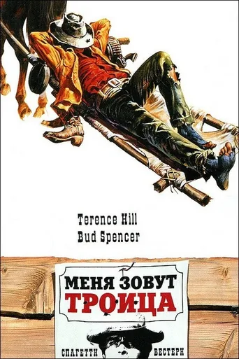

Меня зовут Троица 1970
Вольный стрелок Троица, прозванный за умение быстро и метко стрелять «Правой рукой дьявола», приезжает в город, где натыкается на своего сводного брата Бамбино (по кличке «Левая рука дьявола»). Их мать — содержательница публичного дома, в прошлом — проститутка, поэтому братья не знают, кто были их отцы. Бамбино «работает» в городе шерифом (на самом-то деле он — грабитель, но, сломав настоящему шерифу ногу, он решил занять его место, чтобы на время залечь на дно) и Троица решает ему «помочь». Община мормонов, приняв их за реальных служителей закона, просит найти управу на главного местного землевладельца и его банду. Обе руки дьявола не позволят свершиться беззаконию. Точнее, они и сами-то не прочь совершить какое-нибудь преступление, однако Троица всерьез западает на двух мормонских цыпочек, так что всех негодяев ожидает кровавая баня…
Открыть в каталогеДанные и постеры принадлежат их правообладателям. Этот продукт использует TMDB API, но не одобрен и не сертифицирован TMDB.